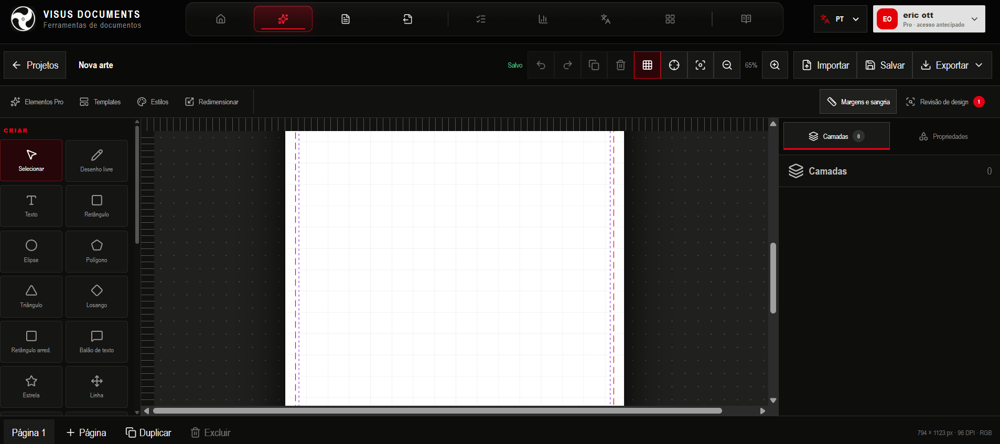
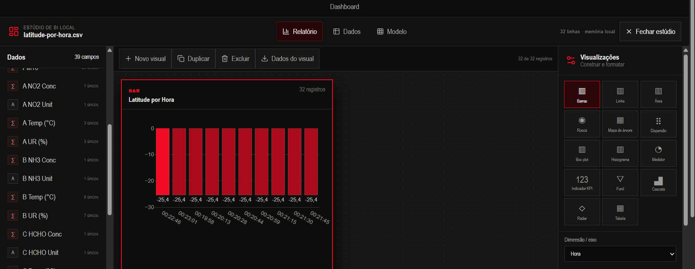
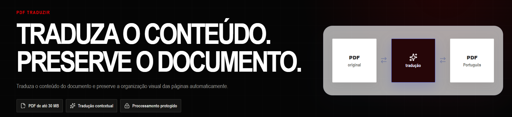

Office completo
Crie e edite arquivos profissionais diretamente no navegador, com uma experiência voltada à produtividade.
Crie, edite, transforme e compreenda documentos em uma plataforma conectada ao seu fluxo de trabalho.
O Visus Documents reúne produção Office, design profissional, edição de PDF, formulários, conversão, tradução, análise de dados e governança em um único ambiente.

Da primeira ideia ao documento aprovado, o Visus reduz a fragmentação entre aplicativos. Arquivos, conteúdo visual, dados e processos documentais convivem em ambientes especializados, conectados por uma experiência consistente.
Ambientes completos para diferentes etapas do trabalho documental.
Crie e edite arquivos profissionais diretamente no navegador, com uma experiência voltada à produtividade.
Produza artes, apresentações, capas, certificados e peças institucionais com camadas, páginas e exportação profissional.
Edite conteúdo e páginas, insira elementos, revise, anote, assine, organize e proteja documentos.
Organize acervos, compare documentos e encontre respostas apoiadas em evidências verificáveis.
O Studio Gráfico aproxima conteúdo e design para produzir materiais profissionais sem romper o fluxo documental.

Capacidades especializadas, reunidas para sustentar o ciclo completo do documento.
Transforme PDF em Word, imagens, Excel, PowerPoint, EPUB e outros formatos, além de reunir arquivos em PDF.
Estruture cadastros, autorizações, checklists, aprovações, ordens de serviço e fluxos próprios.
Traduza conteúdo com preservação da organização visual e uma experiência orientada à revisão.
Transforme planilhas em indicadores, gráficos, painéis e relatórios executivos.
Identifique mudanças lado a lado, por texto ou sobreposição visual.
Una, gire, numere, sanitize e otimize conjuntos de PDFs de forma padronizada.
Acompanhe integridade, aprovações, classificação, requisitos e trilhas documentais.
Gere códigos para links, Wi-Fi, contatos, eventos e comunicação institucional.

Explore campos, escolha visualizações e monte relatórios com indicadores que ajudam equipes a interpretar informações e comunicar resultados.
Conecte criação, transformação, análise e entrega em uma jornada mais coerente.
Reduza etapas manuais com modelos, conversões, operações em lote e ferramentas especializadas.
Revise conteúdo, compare versões, organize páginas e refine a apresentação antes de exportar.
Estruture aprovações, integridade, classificação e rastreabilidade conforme o processo da organização.
A plataforma privilegia fluxos locais e informa quando um recurso mantém o arquivo no dispositivo. O comportamento pode variar conforme a ferramenta e os serviços selecionados, permitindo decisões mais conscientes sobre cada operação.
Uma plataforma para profissionais e equipes que precisam criar melhor, trabalhar mais rápido e manter o controle sobre seus documentos.
Conhecer a plataforma ↗